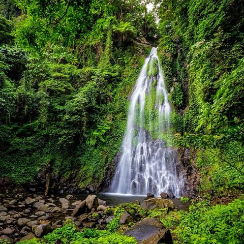

Biliran packs its waterfalls into a small island, and the choice between them comes down to effort. Tinago is the easy one with steps and a registration office. Ulan-Ulan and Recoletos are a muddy walk apart from the road. Pondol Falls, tucked into Almeria's interior, is the quiet option that most day itineraries leave out. Pick by how much walking you want, and the island sorts itself out.
This guide ranks the falls by difficulty, gives realistic travel and fee notes, and sets out how to reach Naval from Cebu without a direct boat. Biliran is a province of its own, joined to Leyte by a bridge, so the trip works as a long weekend if you arrive early.
Plan on a habal-habal for the day. Falls here sit at the end of barangay roads, public transport barely reaches them, and a driver who knows the trails saves more time than he costs.

Getting to Biliran From Cebu
Ferry booking sites currently list no Cebu City to Naval sailing, so Ormoc is the working gateway. OceanJet's fast craft leaves Cebu for Ormoc four times a day, at 6:00 AM, 9:30 AM, 1:00 PM and 4:30 PM, in about three hours, with fares listed from roughly PHP 1,400 to PHP 1,950 depending on class. Vans from Ormoc to Naval take about two hours. Catch the morning boat so you reach the island in daylight. Our Kalanggaman Island guide covers the same Ormoc leg if you want to combine the two.
The alternative is to fly Cebu to Tacloban, about an hour, then take a van to Naval, which takes roughly two and a half hours. Our Tacloban guide explains the Cebu–Tacloban flights, and the ferry versus flight budget guide helps you weigh the two routes.
The Falls, From Easiest to Hardest
Tinago Falls, Caibiran
Tinago, in Barangay Cabibihan, is the most developed fall on the island. It sits about 30 minutes from Naval by habal-habal along a paved road, and cemented steps lead down from the registration office to a swimmable basin. The drop is roughly 27 metres. Expect a small entrance fee, a kiosk and cottages, and strong currents close to the plunge, so swim near the edges. The name means "hidden", and the site is run as an eco-tourism park with walking trails and river paths.
Ulan-Ulan Falls, Almeria
Ulan-Ulan, meaning "rain", is about 25 metres tall in thick forest near Sampao village. The walk from the jump-off runs from roughly 15 to 30 minutes depending on where your driver can park, and the descent is steep and slippery. The barangay charges an environmental fee of PHP 20 a person, and a local guide is optional. Spray from the curtain is heavy enough to soak a phone, so carry a dry bag. Habal-habal drivers from Almeria or Naval ask about PHP 500 for a round trip including an hour's wait, so agree on the price before you leave.
Recoletos Falls, Almeria
Recoletos is a five-minute climb above Ulan-Ulan, so you do both on one trip. The drop is shorter, about 15 metres, but the pool is wide and deep, with flat rocks for lunch and a ledge locals use for jumping. The name comes from a statue of San José Recoletos in a nearby cove. There are no cottages, toilets or stores, so bring water and food with you.
Pondol Falls, Almeria
Pondol, in Barangay Iyusan, is the one to add if you want a second waterfall day without crowds. Clear water falls into a calm pool at the end of a path through dense greenery. The drop is modest, around 25 to 30 feet, and the route runs past the Iyusan Rice Terraces: a 15 to 20 minute drive, then about 15 minutes on foot. Stop at the terraces on the way, which are about 20 minutes from Naval. Ask your driver to confirm the route, since signage is thin.
Bagongbong Falls, Almeria
Bagongbong, in Barangay Caucab, is the hard one. The approach takes about 30 minutes by motorbike to Caucab, followed by a forest walk of 15 to 30 minutes on steep, slippery ground, and the basin carries a strong, cold current. It suits confident walkers with a guide who has been there before.
When to Go
April is the driest month on the island, with around 53 mm of rain on average, while July is the wettest at about 309 mm. Dry weather makes the Almeria trails safer and the pools clearer. Heavy rain turns the paths to mud and the currents dangerous, so skip the swim at any fall that is running brown.
Costs and Practical Notes
Habal-habal rates have run about PHP 300 to PHP 500 per waterfall and around PHP 1,000 for a full day, usually for two riders. Prices drift upward, so negotiate and expect a little more. Fees are small, but you need coins for registration desks, tips and snacks because there are few shops near the falls.
Wear shoes with grip, not flip-flops, and keep valuables in a waterproof bag. Hold off on swimming after heavy rain, and ask the registration desk or your driver about water levels. The Biliran Provincial Tourism Office, at (053) 500-8892, can confirm fees and trail conditions before you set out.
A Simple Two-Day Plan
On day one, ride to Tinago, the easiest fall, then return to Naval and rest. On day two, start early for Ulan-Ulan and Recoletos, and finish with Pondol and the Iyusan terraces if the weather holds. Add Bagongbong only with a guide and a dry forecast. That order spreads the effort and leaves your last morning free for the ride back to Ormoc.

Comments
No comments yet. Been here recently? Share a tip or ask a question.
Leave a Reply